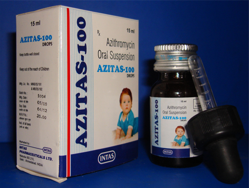

Indications:- Antibiotic/Antibacterial.
- 
AzithromycinSuspension

Azithromycin Dihydrate
SUSPENSION PRESENTATION:
Each 5 ml contains:
Eq. to Azithromycin 100 mg/200 mg

Azithromycin:
Azithromycin is macrolide antibiotic used to treat or prevent certain bacterial infections, most often those causing middle ear infections, strep throat, pneumonia, typhoid, bronchitis. Azithromycin Superior activity against gram+ve,Gram-ve organism. It prevents bacteria from growing by interfering with their protein synthesis.

- Otitis Media
- Upper Respiratory Tract Infection
- Bronchitis
- Pneumonia
- Pharyngitis
- Sinusitis
- Skin or Soft Tissue Infection
- Gonococcal Infection - Uncomplicated

Azithromycin binds to the 50S subunit of the 70S bacterial ribosomes, and therefore inhibits RNA-dependent protein synthesis in bacterial cells.

Absorption:
Following oral administration in humans, azithromycin is widely distributed throughout the body bioavailability is approximately 37%. The time taken to peak plasma levels is 2-3 hours.
Distribution:
Pharmacokinetic studies in humans have shown markedly higher azithromycin levels in tissue than in plasma (up to 50 times the maximum observed concentration in plasma) indicating that the drug is heavily tissue bound. Concentrations in target tissues, such as lung, tonsil and prostate exceed the MIC90 for likely pathogens after a single dose.
Elimination:
Plasma terminal elimination half-life closely reflects the tissue depletion half-life of 2 to 4 days. Approximately 12% of an intravenously administered dose is excreted in the urine over 3 days as the parent drug, the majority in the first 24 hours. Biliary excretion of azithromycin is a major route of elimination for unchanged drug following oral administration. Very high concentrations of unchanged drug have been found in human bile, together with 10 metabolites, formed by Nand O-demethylation, by hydroxylation of the desosamine and aglycone rings, and by cleavage of the cladinose conjugate. Comparison of HPLC and microbiological assays in tissues suggests that metabolites play no part in the microbiological activity of azithromycin.

Side effects of Amoxycillin are most likely to be minor:
- Abdominal pain
- Rash
- Headache

The use of azithromycin is contraindicated in patients with hypersensitivity to azithromycin, erythromycin, any macrolide or ketolide antibiotic.

From the above discussion, it can be concluded that Azithromycin used to treat Infections of the middle ear, Upper Respiratory Tract Infection, Bronchitis, Pneumonia, Pharyngitis, Sinusitis and Skin or Soft Tissue Infection because azithromycin is macrolide antibiotic and used to treat bacterial infections by binds to the 50S subunit of the 70S bacterial ribosomes, and therefore inhibits RNA-dependent protein synthesis in bacterial cells.
We are making superior quality of Azithromycin Suspension that is used to prevent bacterial infection like Upper Respiratory Tract Infection, Bronchitis, Pneumonia, Pharyngitis, Sinusitis, Skin or Soft Tissue Infection and Infections of the middle ear.
Our offered Suspension is processed using high grade chemical compounds and other required drugs by our experienced quality controllers that ensure its quality, purity and chemical properties. Highly treasured among the clients for its reliability, accurate composition, excellent physical and purity, this Suspension is offered to our esteemed clients at the market leading prices.
-
" For Us Quality Means Doing It Right When No One Is Looking"
-
"Wherever the art of Medicine is love, there is also a love of Humanity "